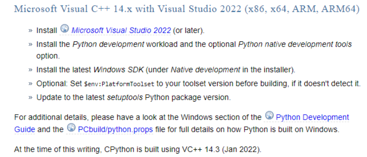
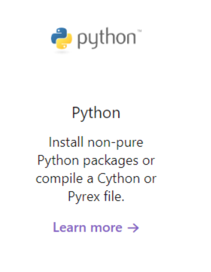
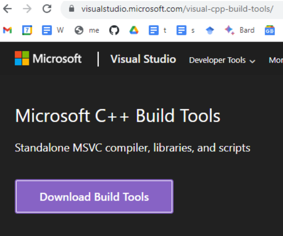
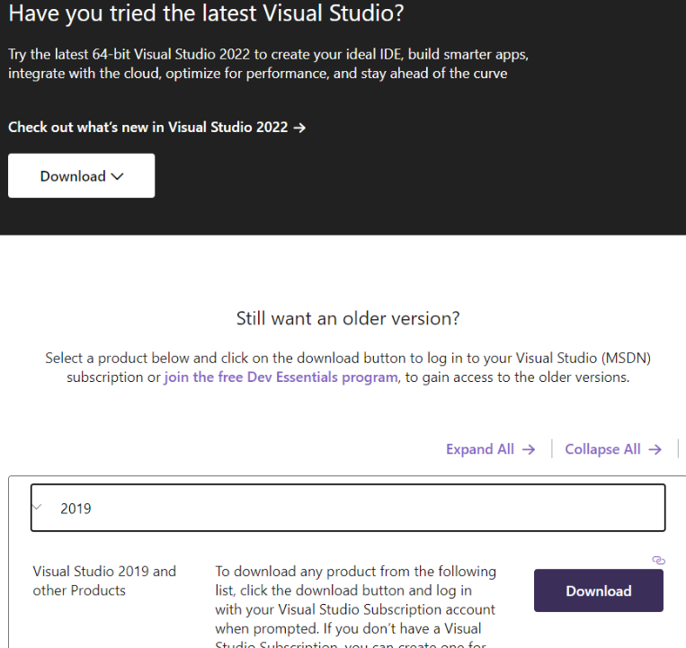
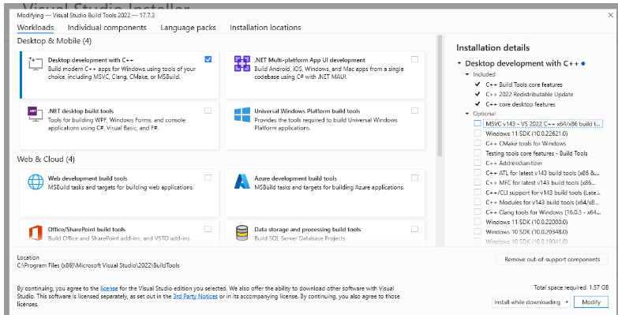
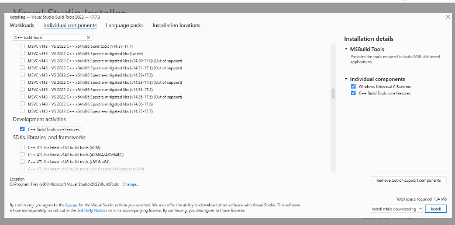
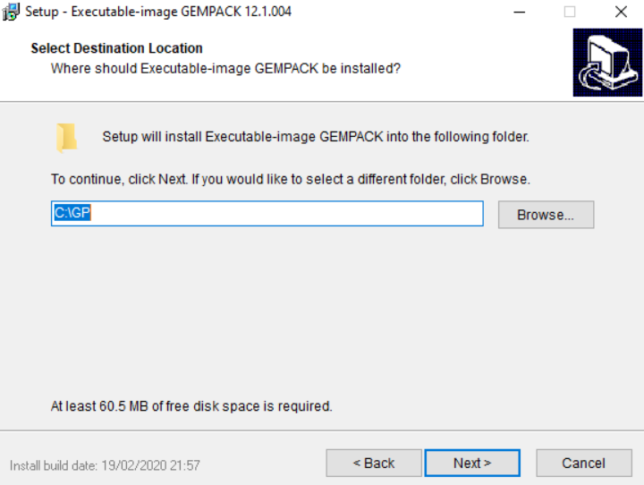
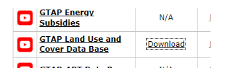
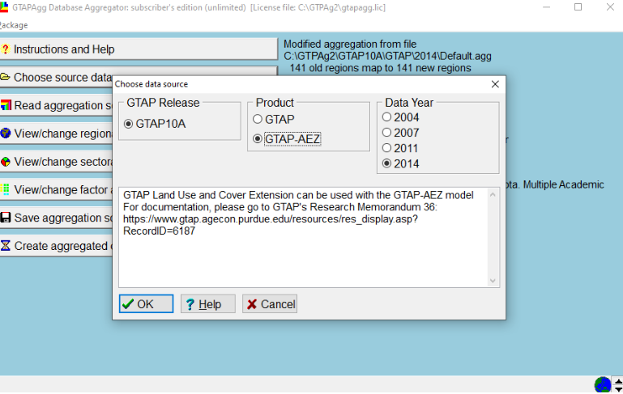

Installing the GTAP toolchain
GTAPpy is a thin Python layer over a stack of Windows programs from Purdue and CoPS. Installing GTAPpy itself is the easy part; the work is getting that stack in place and licensed. There are four pieces, and they have to be installed in roughly this order:
| piece | what it is | why you need it |
|---|---|---|
| Microsoft C++ Build Tools | MSVC compiler | builds the Cython extensions in Hazelbean, which GTAPpy imports |
GEMPACK (gpei) |
the CGE solver | actually solves the GTAP model |
| RunGTAP | GUI front end | ships the compiled v7 model code and is how you produce a working version directory |
| GTAPAgg2 | database aggregator | turns the licensed GTAP database into the aggregation you want to run |
GEMPACK, RunGTAP and GTAPAgg2 are Windows-only. On a Mac or Linux workstation the usual arrangement is a Windows VM holding the toolchain, driven over SSH — gtappy_runner.py has a run_gtap_cmf_on_vm path and a mac_to_win path translator for exactly this.
1. C++ build tools (for Cython)
This step is not about GTAP at all. Hazelbean, which GTAPpy depends on, contains Cython extension modules, and pip has to compile them on install. On Windows that requires the MSVC compiler, and the error you get without it (“Microsoft Visual C++ 14.0 or greater is required”) is the most common first-run failure in the whole devstack.
The Python packaging documentation’s Windows compilers page is the authority on which compiler version pairs with which Python. It is worth checking rather than guessing, because the requirement moves with each CPython release:

The same page is where the “you only need this if you are compiling a Cython or Pyrex file” caveat comes from — which is precisely our case:

You do not need full Visual Studio. The standalone Build Tools for Visual Studio package is enough, and is a much smaller install:

If the current build tools do not match the compiler version your Python needs, older releases are reachable from the same site under “Still want an older version?”, though this requires a (free) Dev Essentials account:

In the installer, the simple route is the Desktop development with C++ workload, which pulls in the compiler, the CRT and the Windows SDK together:

If you would rather keep the install small, skip the workload and pick the components directly on the Individual components tab — the MSVC v143 x64/x86 build tools, the C++ build tools core features, the Windows Universal C Runtime, and a Windows SDK. That is roughly 100 MB more rather than the workload’s several GB:

Verify by opening a fresh shell and importing Hazelbean, which triggers compilation on first import:
import hazelbean as hb2. GEMPACK
GEMPACK is the solver. Download the executable-image release from CoPS at https://www.copsmodels.com/gpeidl.htm — for example gpei-12.1.004-install.exe (or the 12.0 build if you need to match an older model release).
Install to the default location. GEMPACK expects to live at a short path with no spaces, and a lot of downstream configuration assumes C:\GP:

Proceed without selecting a licence file. That starts the six-month trial, which is enough to get a working setup before a licence is sorted out.
The path you install to is the one GTAPpy needs to know about; in a run file it is set as the GEMPACK utilities directory (historically p.gempack_utils_dir).
3. RunGTAP
Install RunGTAP from https://www.gtap.agecon.purdue.edu/products/rungtap/default.asp.
RunGTAP is a GUI, and GTAPpy exists so you do not have to use it for production runs. You still need it installed, for two reasons: it ships with a compiled copy of the GTAP v7 model code, which is where the version directory GTAPpy runs against ultimately comes from; and it is the most convenient place to sanity-check a new database or a new shock before wiring it into a task tree. Both of those are covered in Running GTAP by hand.
4. GTAPAgg2 and the GTAP database
Everything below requires access to the GTAP database, which is licensed from Purdue. Within our group you can instead reach an already-licensed copy through the ee_internal database — use hb.get_path() against the private bucket rather than downloading and aggregating yourself. The manual route is documented here because someone has to do it once per database release, and because it explains where the files GTAPpy consumes come from.
Get GTAPAgg2 from https://www.gtap.agecon.purdue.edu/private/secured.asp?Sec_ID=1055.
Get the licence file. Step 2 of https://www.gtap.agecon.purdue.edu/databases/download.asp yields a .lic file. Put it in the GTAPAgg2 directory — the aggregator reads it from there and the title bar shows the licence it found.
Get the database itself, from the same download page. Take the standard package and the AEZ (Land Use and Cover) version — the AEZ extension is what carries land by agro-ecological zone, which is the whole point of the land-use work the devstack does with GTAP:

Each download is a .pkg file; put both in the GTAPAgg2 directory. When you launch GTAPAgg2, point it at both packages so the AEZ product is selectable under Choose source data. Getting this wrong is a quiet failure — you get a perfectly valid database that simply has no AEZ detail in it:

With the toolchain installed, continue to Building an aggregated database.